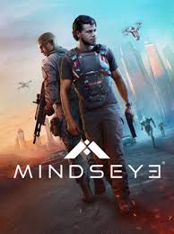

Aniimo
Türkçe YamaAniimo dünyasını şimdi Türkçe olarak keşfet. Kurulum videosu ve yama detayları hazır.
Yama Sayfası ›Silent Hill Townfall Türkçe yaması arşive eklendi. Kurulum bilgilerine ve iki farklı indirme seçeneğine ulaş.
🎮 Yamaya Göz At ›
Sevdiğin oyunları artık Türkçe oyna!
Aniimo dünyasını şimdi Türkçe olarak keşfet. Kurulum videosu ve yama detayları hazır.
Yama Sayfası ›
Cuphead macerasını Türkçe oyna. Kurulum bilgileri ve indirme seçenekleri tek sayfada.
Yama Sayfası ›
Karanlık atmosferi Türkçe deneyimle. Kurucusuz dosya sürümü ve iki indirme seçeneği hazır.
Yama Sayfası ›
MindsEye Türkçe yaması, iki indirme seçeneği ve VirusTotal güvenlik kontrolüyle yayında.
Yama Sayfası ›